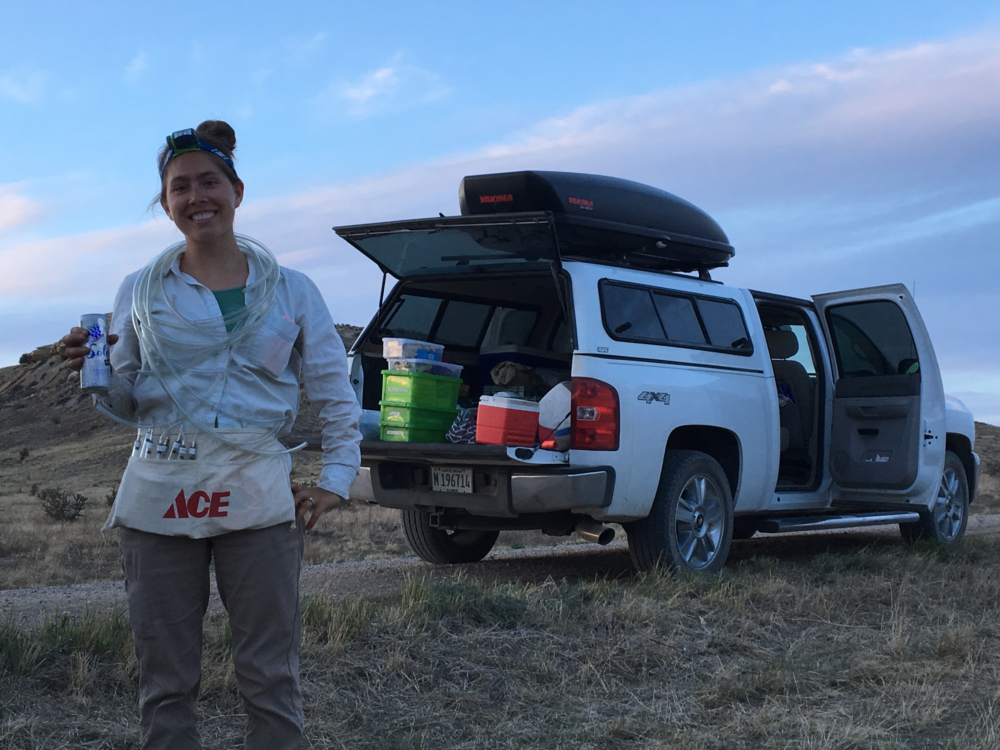

I am currently a first year graduate student studying linalool production in the Arkansas Valley Evening Primrose. I expect to defend my dissertation in 2024 and continue a career in academia. Before my graduate studies, I worked as a research assistant for Dr Krissa Skogen on the Landscapes of Linalool Project. I've also worked at the University of Oklahoma as a research assistant to Dr Scott Russell, which solidified my love of working in the greenhouse. I did my undergraduate studies in Providence, Rhode Island, where I graduated with a BSc in Biology at Brown University. While at Brown, I completed and defended an honors thesis on the patterns between morphology, phylogeny, and phytochemistry in Viburnum leaves in Mexico with Dr. Erika Edwards.
I am originally from Wisconsin, where I grew up loving the outdoors. When I'm not in the field, lab, or greenhouse, you can find me sailing on Lake Michigan (the very best body of water in the whole wide world).
While I have always had an interest in plants and the natural world, becoming a scientist never felt like an obvious, or even viable, career path until my junior year of college. Because of this experience, increasing the visibility of science as a profession and increasing the diversity of people who can see themselves as scientists is important to me. If my research is interesting to you, and you want to get involved, please reach out! And consider applying for the 2020 NSF Research Experience for Undergraduates at the Garden.
